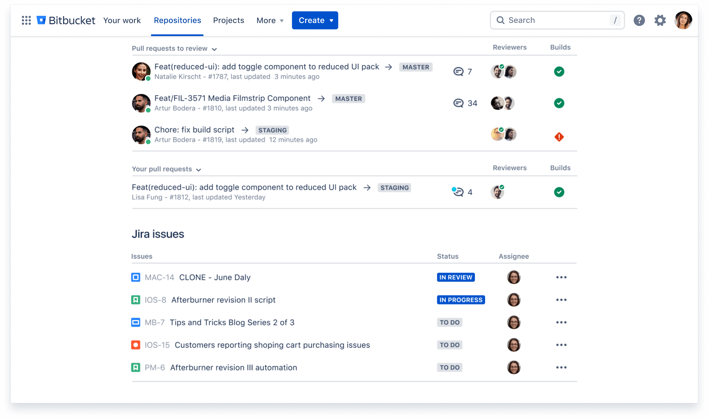
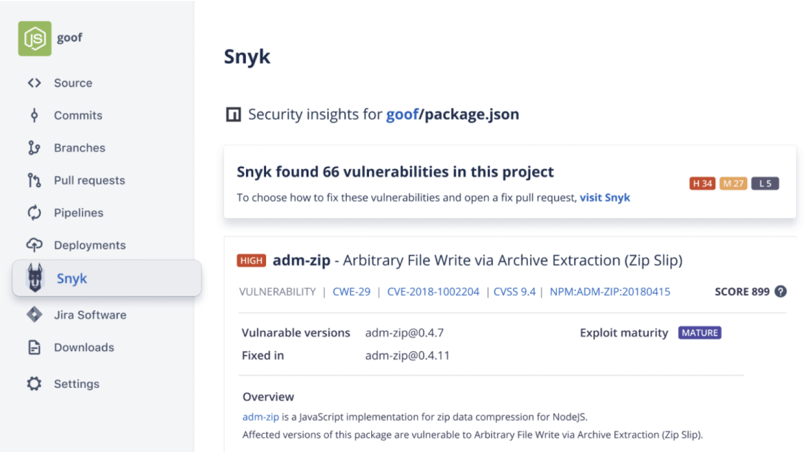

With best-in-class Jira integration, and built-in CI/CD, Bitbucket Cloud is the native Git tool in
Atlassian’s Open DevOps solution. Join millions of developers who choose to build on Bitbucket.

Migrating from Bitbucket Server? Get the free Bitbucket Cloud migration app.
Reduce context-switching by managing your Jira
issues in Bitbucket with the built-in Jira UI. And
when you include your issue key in commits,
your Jira issue statuses update automatically.
Comprehensive code review features to help you find and fix bugs before you deploy. Review
large diffs with ease, view third-party code reports, and open Jira tickets right from
the PR screen.
Use our built-in CI/CD tool, Bitbucket Pipelines, to create powerful, automated workflows.
Or connect Bitbucket Cloud to on-prem CI/CD tools like Bamboo or Jenkins.
See how Bitbucket Cloud works with Atlassian Open DevOps
Atlassian Open DevOps is a pre-configured DevOps solution with Jira Software, Bitbucket,
Confluence and Opsgenie. This video demos a code change workflow using
Jira Software and Bitbucket Pipelines.
SECURE YOUR CODE
Run automatic security scans with out-of-the-box integration with Snyk, or connect to other
providers. Simply open an existing repository or create a new one and navigate to the Security
tab to install the Snyk integration.

Collaborate with IT Ops
Enable automated change approval processes and resolve incidents faster by mapping
incidents to deployments with Bitbucket and Jira Service Management.
Bitbucket Cloud is compliant with SOC2/3, ISO, and GDPR. 2FA and IP allowlisting keep your
code accessible only by authorized users. All code is encrypted in transit and at rest.
Don’t settle for an all-in-one DevOps tool. Start by connecting Bitbucket and Jira Software via
Atlassian’s Open DevOps solution, then build out your custom DevOps stack with market-leading
partner tools across security, testing and monitoring.
15 million developers from over a million teams love Bitbucket
1 OF 4
“Jira and Bitbucket are linked to show details and where the change is in production. It’s
traceable, so they know we’re doing and when we’re deploying.
Kyle Gengler,Senior DevOps Engineer
Learn more
Need a self-hosted option?
Bitbucket Data Center is our code collaboration tool built for teams who need to host code
behind the firewall.